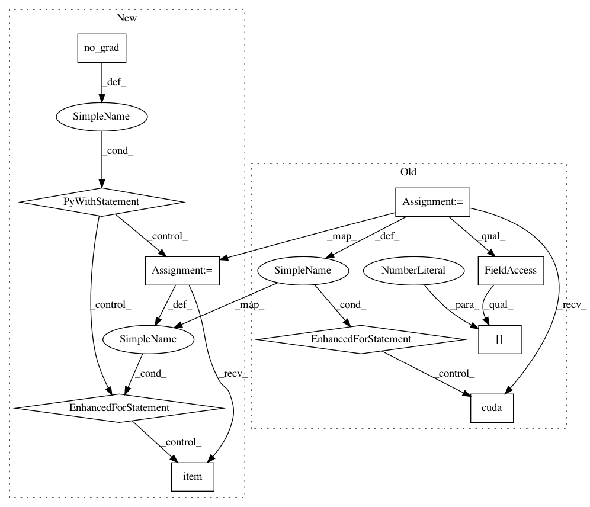

0ad33d606682537466f3430fc6d6ac7d47460f1a,intermediate_source/spatial_transformer_tutorial.py,,test,#,183
Before Change
model.eval()
test_loss = 0
correct = 0
for data, target in test_loader:
if use_cuda:
data, target = data.cuda(), target.cuda()
data, target = Variable(data, volatile=True), Variable(target)
output = model(data)
// sum up batch loss
test_loss += F.nll_loss(output, target, size_average=False).data[0]
// get the index of the max log-probability
pred = output.data.max(1, keepdim=True)[1]
correct += pred.eq(target.data.view_as(pred)).cpu().sum()
test_loss /= len(test_loader.dataset)
print("\nTest set: Average loss: {:.4f}, Accuracy: {}/{} ({:.0f}%)\n"
.format(test_loss, correct, len(test_loader.dataset),
100. * correct / len(test_loader.dataset)))
After Change
def test():
with torch.no_grad():
model.eval()
test_loss = 0
correct = 0
for data, target in test_loader:
data, target = data.to(device), target.to(device)
output = model(data)
// sum up batch loss
test_loss += F.nll_loss(output, target, size_average=False).item()
// get the index of the max log-probability
pred = output.max(1, keepdim=True)[1]
correct += pred.eq(target.view_as(pred)).sum().item()
test_loss /= len(test_loader.dataset)
print("\nTest set: Average loss: {:.4f}, Accuracy: {}/{} ({:.0f}%)\n"
.format(test_loss, correct, len(test_loader.dataset),
100. * correct / len(test_loader.dataset)))
////////////////////////////////////////////////////////////////////////////////////////////////////////////////////////////////////////////
// Visualizing the STN results
// ---------------------------
//
// Now, we will inspect the results of our learned visual attention
// mechanism.
//
// We define a small helper function in order to visualize the
// transformations while training.
def convert_image_np(inp):
Convert a Tensor to numpy image.
inp = inp.numpy().transpose((1, 2, 0))
mean = np.array([0.485, 0.456, 0.406])
In pattern: SUPERPATTERN
Frequency: 3
Non-data size: 10
Instances
Project Name: pytorch/tutorials
Commit Name: 0ad33d606682537466f3430fc6d6ac7d47460f1a
Time: 2018-04-24
Author: soumith@gmail.com
File Name: intermediate_source/spatial_transformer_tutorial.py
Class Name:
Method Name: test
Project Name: pytorch/examples
Commit Name: 645c7c386e62d2fb1d50f4621c1a52645a13869f
Time: 2018-04-24
Author: soumith@gmail.com
File Name: mnist/main.py
Class Name:
Method Name: test
Project Name: bearpaw/pytorch-pose
Commit Name: 585303417c3f4641f61ac5a916a51505a67cc507
Time: 2019-01-24
Author: platero.yang@gmail.com
File Name: example/mscoco.py
Class Name:
Method Name: validate